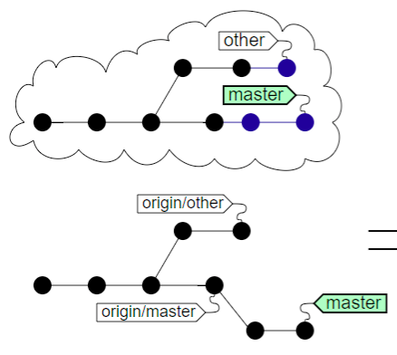
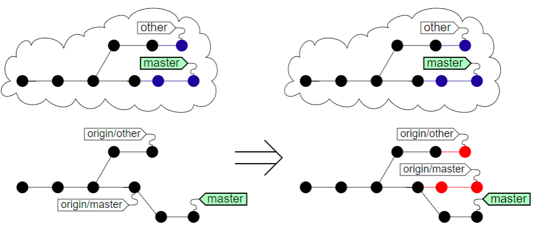
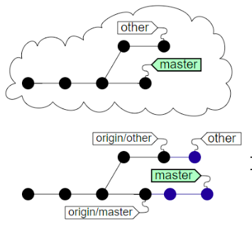
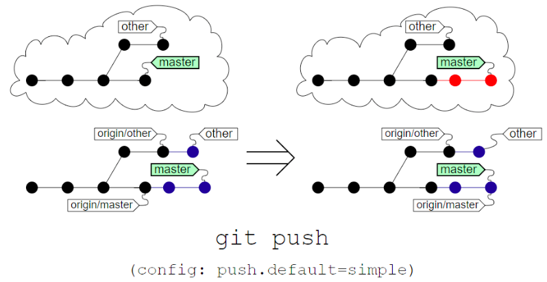

## Zeigt alle konfigurierten Remotes an
$ git remote -v
origin https://github.com/barclay-reg/dhbw-slides.git (fetch)
origin https://github.com/barclay-reg/dhbw-slides.git (push)VCS 4
Remotes
- GIT
Stupid Content Tracker, effizienter Objekt-Speicher mit der Fähigkeit zwei Objektspeicher miteinander zu Synchronisieren.
Synchronsation bei Daten == Replikation
Synchronistion der Git-Objekte == Replikation aller Git-Objekte
Remotes
Das letzte verbliebene Element in der Liste der Git-Objekte
Ein lokales Repository mit vielen verschiedenen Remote Repositories verbunden sein
wenn Repo durch
git cloneentstanden ist, gibt es genau ein Remote mit dem Namenorigin
Branches Synchronisieren
Sync bei GIT-Objekten relativ einfach
Sync bei Referenzen etwas komplexer
Problem: Referenz wurde auf beiden Seiten verändert
Lösung:
Speichern aller lokalen und remote Referenzen
Speichern der Verbindung zwischen lokaler und remote Referenz
Remote Referenzen
## Auflistung aller Dateien im Ordner .git/refs
$ find .git/refs
.git/refs
.git/refs/heads
.git/refs/heads/master
.git/refs/heads/my-branch-1
.git/refs/tags
.git/refs/tags/test-tag-0
.git/refs/tags/test-tag-1
.git/refs/remotes
.git/refs/remotes/origin
.git/refs/remotes/origin/master
.git/refs/remotes/origin/other-branch-2Remote Tracking Branches
Name der remote Branches setzt sich aus dem Namen des Remote Repository plus dem Namen des Branches zusammen
z.B.
origin/feature-1
Wenn ein lokaler Branch mit einem remote Branch verbunden ist, dann spricht man von einem sog.: Remote-Tracking-Branch
manchmal auch von Upstream Branch
der Branch
origin/masterwird vonmastergetracked
Kommandos
## Zeigt alle Remote Branches an
$ git branch –r
origin/master
origin/feature-1
## Legt neuen Branch an, der origin/feature-1 trackt
$ git branch feature-1 origin/feature-1
## Shortcut, legt automatisch lokalen Branch an, falls ein
## Branch `origin/feature-1` existiert
$ git checkout feature-1
## Definiert für den aktuellen lokalen Branch dem
## Namen des Remote Branches
$ git branch --set-upstream-to origin/neues-featureArbeiten mit Remotes
Transportwege

Fetch und Pull
git fetchHolt alle Commits von den remote Repository(ies)
keine Änderung an der Workcopy
oft ist danach ein Merge notwendig (3WM oder FF)
git pullShortcut für
git fetch&git merge
## ohne die Angabe von `origin` werden alle Remotes abgefragt
$ git fetch origin
## merge des Remote-Branches auf den aktuellen lokalen Branch
$ git merge origin/master
## Shortcut für die beiden oberen Befehle
## auch hier kann `origin` weggelassen werden
$ git pull originFetch und Pull

Fetch und Pull

Push
git pushüberträgt alle lokalen Commits zu dem Remote Repository
Nur erlaubt, wenn (remote) ein Fast-Forward-Merge möglich ist, ansonstten vorher
git pulldanach ist KEIN Ändern der Historie/Commits empfohlen
Kein Commit-Amend, Reset von Branches, Rebasing
je nach Konfiguration wird nur der lokale Branch oder alle Branches synchronisiert
config: push.default=simple
Push

Push

Clone & Fork
git clonekopieren eines remote Repositories auf den eigenen Rechner
"erste Synchronisieren" plus "Checkout"
kein
git initmehr nötig
forkkein Git Befehl
Findet auf einem Git-Server statt, z.B. auf https://github.com
im Hintergrund wird auch
git cloneausgeführt
Clone & Fork
Problem: Wie kommen Änderungen des Originals zu meinem Fork?
Lösung: weiteres Remote-Repo
Ohne Fork

Ohne Fork - Anders

Ohne Fork - Remotes
$ git remote -v
origin github.com/fn-tfe15-2-g1/dhbw-painground.git (fetch)
origin github.com/fn-tfe15-2-g1/dhbw-painground.git (push)Mit Fork

Mit Fork - Anders

Mit Fork - Remotes
$ git remote add upstream https://github.com/barclay-reg/dhbw-painground.git
$ git remote -v
origin github.com/fn-tfe15-2-g1/dhbw-painground.git (fetch)
origin github.com/fn-tfe15-2-g1/dhbw-painground.git (push)
upstream github.com/barclay-reg/dhbw-painground.git (fetch)
upstream github.com/barclay-reg/dhbw-painground.git (push)Mit Fork - Änderungen abholen
## Änderungen von Remote "upstream" holen
$ git fetch upstream
## auf eigenen Branch "master" wechseln
$ git checkout master
## Alle commits von Branch "master" von Remote "upstream"
## in aktuellen Branch mergen
$ git merge upstream/master
## Änderungen an github senden
$ git pushPull Request
Antrag, ein oder mehrere Commits von einem Branch in einen anderen Branch zu mergen
kann jemandem zugewiesen werden
Erlaubt Code-Review, Code-Diskussion
wenn Antrag akzeptiert ist, wird ein Pull (fetch & merge) gemacht
Kann per
git request-pullgestartet werden, aberbesser per Web-Interface (Github, Bitbucket, Gitlab)
Wieso PR
Warum nicht einfach Mergen?
(Feature)-Branches können länger leben
Niemand außer dem Author weiß, wann das Feature fertig ist
Erstellend es PR ist ein eindeutiger Trigger für
Start des Code-Reviews
Start von aufwändigeren automatisierten Tests